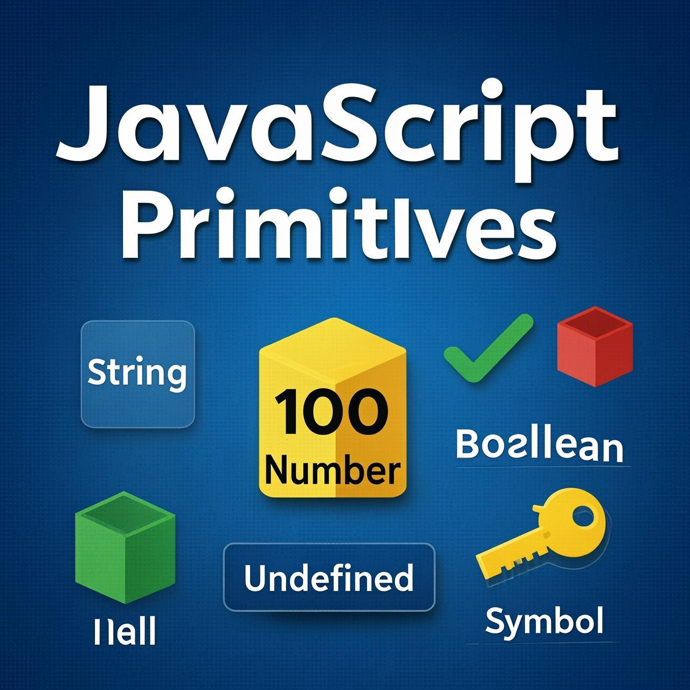

Understanding how primitives work with methods

JavaScript allows us to work with primitives (strings, numbers, etc.) as if they were objects. They also provide methods to call as such. We will study those soon, but first we'll see how it works because, of course, primitives are not objects (and here we will make it even clearer).
A primitive
An object
One of the best things about objects is that we can store a function as one of its properties.
So here we've made an object john with the method sayHi.
Many built-in objects already exist, such as those that work with dates, errors, HTML elements, etc. They have different properties and methods.
But, these features come with a cost! Objects are "heavier" than primitives. They require additional resources to support the internal machinery.
The paradox and solution
Here's the paradox faced by the creator of JavaScript:
The solution looks a little bit awkward, but here it is:
The "object wrappers" are different for each primitive type and are called: String, Number, Boolean, Symbol and BigInt. Thus, they provide different sets of methods.
For instance, there exists a string method str.toUpperCase() that returns a capitalized str.
Here's how it works:
Simple, right? Here's what actually happens in str.toUpperCase():
So primitives can provide methods, but they still remain lightweight.
The JavaScript engine highly optimizes this process. It may even skip the creation of the extra object at all. But it must still adhere to the specification and behave as if it creates one.
A number has methods of its own, for instance, toFixed(n) rounds the number to the given precision:
We'll see more specific methods in chapters Numbers and Strings.
For internal use only
Some languages like Java allow us to explicitly create "wrapper objects" for primitives using a syntax like new Number(1) or new Boolean(false).
In JavaScript, that's also possible for historical reasons, but highly unrecommended. Things will go crazy in several places.
For instance:
Objects are always truthy in if, so here the alert will show up:
On the other hand, using the same functions String/Number/Boolean without new is totally fine and useful thing. They convert a value to the corresponding type: to a string, a number, or a boolean (primitive).
For example, this is entirely valid:
The special primitives null and undefined are exceptions. They have no corresponding "wrapper objects" and provide no methods. In a sense, they are "the most primitive".
An attempt to access a property of such value would give the error:
Primitives except null and undefined provide many helpful methods. We will study those in the upcoming chapters.
Formally, these methods work via temporary objects, but JavaScript engines are well tuned to optimize that internally, so they are not expensive to call.
Understanding number types in JavaScript
In modern JavaScript, there are two types of numbers:
Regular numbers in JavaScript are stored in 64-bit format IEEE-754, also known as "double precision floating point numbers". These are numbers that we're using most of the time, and we'll talk about them in this chapter.
BigInt numbers represent integers of arbitrary length. They are sometimes needed because a regular integer number can't safely exceed (2^53-1) or be less than -(2^53-1), as we mentioned earlier in the chapter Data types. As bigints are used in a few special areas, we devote them to a special chapter BigInt.
So here we'll talk about regular numbers. Let's expand our knowledge of them.
Imagine we need to write 1 billion. The obvious way is:
We also can use underscore _ as the separator:
Here the underscore _ plays the role of the "syntactic sugar", it makes the number more readable. The JavaScript engine simply ignores _ between digits, so it's exactly the same one billion as above.
In real life though, we try to avoid writing long sequences of zeroes. We're too lazy for that. We'll try to write something like "1bn" for a billion or "7.3bn" for 7 billion 300 million. The same is true for most large numbers.
In JavaScript, we can shorten a number by appending the letter "e" to it and specifying the zeroes count:
In other words, e multiplies the number by 1 with the given zeroes count.
Now let's write something very small. Say, 1 microsecond (one-millionth of a second):
Just like before, using "e" can help. If we'd like to avoid writing the zeroes explicitly, we could write the same as:
If we count the zeroes in 0.000001, there are 6 of them. So naturally it's 1e-6.
In other words, a negative number after "e" means a division by 1 with the given number of zeroes:
Different numeral systems in JavaScript
Hexadecimal numbers are widely used in JavaScript to represent colors, encode characters, and for many other things. So naturally, there exists a shorter way to write them: 0x and then the number.
For instance:
Binary and octal numeral systems are rarely used, but also supported using the 0b and 0o prefixes:
There are only 3 numeral systems with such support. For other numeral systems, we should use the function parseInt (which we will see later in this chapter).
The method num.toString(base) returns a string representation of num in the numeral system with the given base.
For example:
The base can vary from 2 to 36. By default, it's 10.
Common use cases for this are:
Please note that two dots in 123456..toString(36) is not a typo. If we want to call a method directly on a number, like toString in the example above, then we need to place two dots .. after it.
If we placed a single dot: 123456.toString(36), then there would be an error, because JavaScript syntax implies the decimal part after the first dot. And if we place one more dot, then JavaScript knows that the decimal part is empty and now uses the method.
Also could write (123456).toString(36).
Different ways to round numbers
One of the most used operations when working with numbers is rounding.
There are several built-in functions for rounding:
Math.floor
Rounds down: 3.1 becomes 3, and -1.1 becomes -2.
Math.ceil
Rounds up: 3.1 becomes 4, and -1.1 becomes -1.
Math.round
Rounds to the nearest integer: 3.1 becomes 3, 3.6 becomes 4. In the middle cases 3.5 rounds up to 4, and -3.5 rounds up to -3.
Math.trunc (not supported by Internet Explorer)
Removes anything after the decimal point without rounding: 3.1 becomes 3, -1.1 becomes -1.
Here's the table to summarize the differences between them:
| Math.floor | Math.ceil | Math.round | Math.trunc | |
|---|---|---|---|---|
| 3.1 | 3 | 4 | 3 | 3 |
| 3.5 | 3 | 4 | 4 | 3 |
| 3.6 | 3 | 4 | 4 | 3 |
| -1.1 | -2 | -1 | -1 | -1 |
| -1.5 | -2 | -1 | -1 | -1 |
| -1.6 | -2 | -1 | -2 | -1 |
These functions cover all of the possible ways to deal with the decimal part of a number. But what if we'd like to round the number to n-th digit after the decimal?
For instance, we have 1.2345 and want to round it to 2 digits, getting only 1.23.
There are two ways to do so:
Multiply-and-divide.
For example, to round the number to the 2nd digit after the decimal, we can multiply the number by 100, call the rounding function and then divide it back.
The method toFixed(n) rounds the number to n digits after the point and returns a string representation of the result.
This rounds up or down to the nearest value, similar to Math.round:
Please note that the result of toFixed is a string. If the decimal part is shorter than required, zeroes are appended to the end:
We can convert it to a number using the unary plus or a Number() call, e.g. write +num.toFixed(5).
Understanding floating-point precision issues
Internally, a number is represented in 64-bit format IEEE-754, so there are exactly 64 bits to store a number: 52 of them are used to store the digits, 11 of them store the position of the decimal point, and 1 bit is for the sign.
If a number is really huge, it may overflow the 64-bit storage and become a special numeric value Infinity:
What may be a little less obvious, but happens quite often, is the loss of precision.
Consider this (falsy!) equality test:
That's right, if we check whether the sum of 0.1 and 0.2 is 0.3, we get false.
Strange! What is it then if not 0.3?
Ouch! Imagine you're making an e-shopping site and the visitor puts $0.10 and $0.20 goods into their cart. The order total will be $0.30000000000000004. That would surprise anyone.
But why does this happen?
A number is stored in memory in its binary form, a sequence of bits – ones and zeroes. But fractions like 0.1, 0.2 that look simple in the decimal numeric system are actually unending fractions in their binary form.
What is 0.1? It is one divided by ten 1/10, one-tenth. In the decimal numeral system, such numbers are easily representable. Compare it to one-third: 1/3. It becomes an endless fraction 0.33333(3).
So, division by powers 10 is guaranteed to work well in the decimal system, but division by 3 is not. For the same reason, in the binary numeral system, the division by powers of 2 is guaranteed to work, but 1/10 becomes an endless binary fraction.
There's just no way to store exactly 0.1 or exactly 0.2 using the binary system, just like there is no way to store one-third as a decimal fraction.
The numeric format IEEE-754 solves this by rounding to the nearest possible number. These rounding rules normally don't allow us to see that "tiny precision loss", but it exists.
We can see this in action:
And when we sum two numbers, their "precision losses" add up.
That's why 0.1 + 0.2 is not exactly 0.3.
Not only JavaScript
The same issue exists in many other programming languages.
PHP, Java, C, Perl, and Ruby give exactly the same result, because they are based on the same numeric format.
Can we work around the problem? Sure, the most reliable method is to round the result with the help of a method toFixed(n):
Please note that toFixed always returns a string. It ensures that it has 2 digits after the decimal point. That's actually convenient if we have an e-shopping and need to show $0.30. For other cases, we can use the unary plus to coerce it into a number:
We also can temporarily multiply the numbers by 100 (or a bigger number) to turn them into integers, do the maths, and then divide back. Then, as we're doing maths with integers, the error somewhat decreases, but we still get it on division:
So, the multiply/divide approach reduces the error, but doesn't remove it totally.
Sometimes we could try to evade fractions at all. Like if we're dealing with a shop, then we can store prices in cents instead of dollars. But what if we apply a discount of 30%? In practice, totally evading fractions is rarely possible. Just round them to cut "tails" when needed.
Additional number issues and tests
Try running this:
This suffers from the same issue: a loss of precision. There are 64 bits for the number, 52 of them can be used to store digits, but that's not enough. So the least significant digits disappear.
JavaScript doesn't trigger an error in such events. It does its best to fit the number into the desired format, but unfortunately, this format is not big enough.
Another funny consequence of the internal representation of numbers is the existence of two zeroes: 0 and -0.
That's because a sign is represented by a single bit, so it can be set or not set for any number including a zero.
In most cases, the distinction is unnoticeable, because operators are suited to treat them as the same.
Remember these two special numeric values?
They belong to the type number, but are not "normal" numbers, so there are special functions to check for them:
isNaN(value) converts its argument to a number and then tests it for being NaN:
But do we need this function? Can't we just use the comparison === NaN? Unfortunately not. The value NaN is unique in that it does not equal anything, including itself:
isFinite(value) converts its argument to a number and returns true if it's a regular number, not NaN/Infinity/-Infinity:
Sometimes isFinite is used to validate whether a string value is a regular number:
Please note that an empty or a space-only string is treated as 0 in all numeric functions including isFinite.
Number.isNaN and Number.isFinite methods are the more "strict" versions of isNaN and isFinite functions. They do not autoconvert their argument into a number, but check if it belongs to the number type instead.
Number.isNaN(value) returns true if the argument belongs to the number type and it is NaN. In any other case, it returns false.
Number.isFinite(value) returns true if the argument belongs to the number type and it is not NaN/Infinity/-Infinity. In any other case, it returns false.
In a way, Number.isNaN and Number.isFinite are simpler and more straightforward than isNaN and isFinite functions. In practice though, isNaN and isFinite are mostly used, as they're shorter to write.
There is a special built-in method Object.is that compares values like ===, but is more reliable for two edge cases:
In all other cases, Object.is(a, b) is the same as a === b.
We mention Object.is here, because it's often used in JavaScript specification. When an internal algorithm needs to compare two values for being exactly the same, it uses Object.is (internally called SameValue).
Converting strings to numbers
Numeric conversion using a plus + or Number() is strict. If a value is not exactly a number, it fails:
The sole exception is spaces at the beginning or at the end of the string, as they are ignored.
But in real life, we often have values in units, like "100px" or "12pt" in CSS. Also in many countries, the currency symbol goes after the amount, so we have "19€" and would like to extract a numeric value out of that.
That's what parseInt and parseFloat are for.
They "read" a number from a string until they can't. In case of an error, the gathered number is returned. The function parseInt returns an integer, whilst parseFloat will return a floating-point number:
There are situations when parseInt/parseFloat will return NaN. It happens when no digits could be read:
The parseInt() function has an optional second parameter. It specifies the base of the numeral system, so parseInt can also parse strings of hex numbers, binary numbers and so on:
JavaScript has a built-in Math object which contains a small library of mathematical functions and constants.
A few examples:
Math.random()
Returns a random number from 0 to 1 (not including 1).
Math.max(a, b, c...) and Math.min(a, b, c...)
Returns the greatest and smallest from the arbitrary number of arguments.
Math.pow(n, power)
Returns n raised to the given power.
There are more functions and constants in Math object, including trigonometry, which you can find in the docs for the Math object.
To write numbers with many zeroes:
For different numeral systems:
For regular number tests:
For converting values like 12pt and 100px to a number:
For fractions:
More mathematical functions:
Working with text in JavaScript
In JavaScript, the textual data is stored as strings. There is no separate type for a single character.
The internal format for strings is always UTF-16, it is not tied to the page encoding.
Let's recall the kinds of quotes.
Strings can be enclosed within either single quotes, double quotes or backticks:
Single and double quotes are essentially the same. Backticks, however, allow us to embed any expression into the string, by wrapping it in ${…}:
Another advantage of using backticks is that they allow a string to span multiple lines:
Looks natural, right? But single or double quotes do not work this way.
If we use them and try to use multiple lines, there'll be an error:
Single and double quotes come from ancient times of language creation, when the need for multiline strings was not taken into account. Backticks appeared much later and thus are more versatile.
Backticks also allow us to specify a "template function" before the first backtick. The syntax is: func`string`. The function func is called automatically, receives the string and embedded expressions and can process them. This feature is called "tagged templates", it's rarely seen, but you can read about it in the MDN: Template literals.
Escape sequences in strings
It is still possible to create multiline strings with single and double quotes by using a so-called "newline character", written as \n, which denotes a line break:
As a simpler example, these two lines are equal, just written differently:
There are other, less common special characters:
| Character | Description |
|---|---|
| \n | New line |
| \r | In Windows text files a combination of two characters \r\n represents a new break, while on non-Windows OS it's just \n. That's for historical reasons, most Windows software also understands \n. |
| \', \", \` | Quotes |
| \\ | Backslash |
| \t | Tab |
| \b, \f, \v | Backspace, Form Feed, Vertical Tab – mentioned for completeness, coming from old times, not used nowadays (you can forget them right now). |
As you can see, all special characters start with a backslash character \. It is also called an "escape character".
Because it's so special, if we need to show an actual backslash \ within the string, we need to double it:
So-called "escaped" quotes \', \", \` are used to insert a quote into the same-quoted string.
For instance:
As you can see, we have to prepend the inner quote by the backslash \', because otherwise it would indicate the string end.
Of course, only the quotes that are the same as the enclosing ones need to be escaped. So, as a more elegant solution, we could switch to double quotes or backticks instead:
Besides these special characters, there's also a special notation for Unicode codes \u…, it's rarely used and is covered in the optional chapter about Unicode.
Working with individual characters
The length property has the string length:
Note that \n is a single "special" character, so the length is indeed 3.
length is a property
People with a background in some other languages sometimes mistype by calling str.length() instead of just str.length. That doesn't work.
Please note that str.length is a numeric property, not a function. There is no need to add parenthesis after it. Not .length(), but .length.
To get a character at position pos, use square brackets [pos] or call the method str.at(pos). The first character starts from the zero position:
As you can see, the .at(pos) method has a benefit of allowing negative position. If pos is negative, then it's counted from the end of the string.
So .at(-1) means the last character, and .at(-2) is the one before it, etc.
The square brackets always return undefined for negative indexes, for instance:
We can also iterate over characters using for..of:
Strings can't be changed in JavaScript. It is impossible to change a character.
Let's try it to show that it doesn't work:
The usual workaround is to create a whole new string and assign it to str instead of the old one.
For instance:
In the following sections we'll see more examples of this.
Methods toLowerCase() and toUpperCase() change the case:
Or, if we want a single character lowercased:
Finding text within strings
There are multiple ways to look for a substring within a string.
The first method is str.indexOf(substr, pos).
It looks for the substr in str, starting from the given position pos, and returns the position where the match was found or -1 if nothing can be found.
For instance:
The optional second parameter allows us to start searching from a given position.
For instance, the first occurrence of "id" is at position 1. To look for the next occurrence, let's start the search from position 2:
If we're interested in all occurrences, we can run indexOf in a loop. Every new call is made with the position after the previous match:
The same algorithm can be layed out shorter:
There is also a similar method str.lastIndexOf(substr, position) that searches from the end of a string to its beginning.
It would list the occurrences in the reverse order.
There is a slight inconvenience with indexOf in the if test. We can't put it in the if like this:
The alert in the example above doesn't show because str.indexOf("Widget") returns 0 (meaning that it found the match at the starting position). Right, but if considers 0 to be false.
So, we should actually check for -1, like this:
The more modern method str.includes(substr, pos) returns true/false depending on whether str contains substr within.
It's the right choice if we need to test for the match, but don't need its position:
The optional second argument of str.includes is the position to start searching from:
The methods str.startsWith and str.endsWith do exactly what they say:
Extracting parts of strings
There are 3 methods in JavaScript to get a substring: substring, substr and slice.
Returns the part of the string from start to (but not including) end.
For instance:
If there is no second argument, then slice goes till the end of the string:
Negative values for start/end are also possible. They mean the position is counted from the string end:
Returns the part of the string between start and end (not including end).
This is almost the same as slice, but it allows start to be greater than end (in this case it simply swaps start and end values).
For instance:
Negative arguments are (unlike slice) not supported, they are treated as 0.
Returns the part of the string from start, with the given length.
In contrast with the previous methods, this one allows us to specify the length instead of the ending position:
The first argument may be negative, to count from the end:
This method resides in the Annex B of the language specification. It means that only browser-hosted Javascript engines should support it, and it's not recommended to use it. In practice, it's supported everywhere.
Let's recap these methods to avoid any confusion:
| method | selects… | negatives |
|---|---|---|
| slice(start, end) | from start to end (not including end) | allows negatives |
| substring(start, end) | between start and end (not including end) | negative values mean 0 |
| substr(start, length) | from start get length characters | allows negative start |
All of them can do the job. Formally, substr has a minor drawback: it is described not in the core JavaScript specification, but in Annex B, which covers browser-only features that exist mainly for historical reasons. So, non-browser environments may fail to support it. But in practice it works everywhere.
Of the other two variants, slice is a little bit more flexible, it allows negative arguments and shorter to write.
So, for practical use it's enough to remember only slice.
How string comparison works
As we know from the chapter Comparisons, strings are compared character-by-character in alphabetical order.
Although, there are some oddities.
A lowercase letter is always greater than the uppercase:
Letters with diacritical marks are "out of order":
This may lead to strange results if we sort these country names. Usually people would expect Zealand to come after Österreich in the list.
To understand what happens, we should be aware that strings in Javascript are encoded using UTF-16. That is: each character has a corresponding numeric code.
There are special methods that allow to get the character for the code and back:
Returns a decimal number representing the code for the character at position pos:
Creates a character by its numeric code
Now let's see the characters with codes 65..220 (the latin alphabet and a little bit extra) by making a string of them:
See? Capital characters go first, then a few special ones, then lowercase characters, and Ö near the end of the output.
Now it becomes obvious why a > Z.
The "right" algorithm to do string comparisons is more complex than it may seem, because alphabets are different for different languages.
So, the browser needs to know the language to compare.
Luckily, modern browsers support the internationalization standard ECMA-402.
It provides a special method to compare strings in different languages, following their rules.
The call str.localeCompare(str2) returns an integer indicating whether str is less, equal or greater than str2 according to the language rules:
For instance:
This method actually has two additional arguments specified in the documentation, which allows it to specify the language (by default taken from the environment, letter order depends on the language) and setup additional rules like case sensitivity or should "a" and "á" be treated as the same etc.
Complete overview of string methods
There are several other helpful methods in strings:
Strings also have methods for doing search/replace with regular expressions. But that's big topic, so it's explained in a separate tutorial section Regular expressions.
Also, as of now it's important to know that strings are based on Unicode encoding, and hence there're issues with comparisons. There's more about Unicode in the chapter Unicode, String internals.
Congratulations! You've completed the comprehensive guide to JavaScript Primitives: Methods, Numbers, and Strings. Keep practicing and exploring these concepts to become a JavaScript expert!